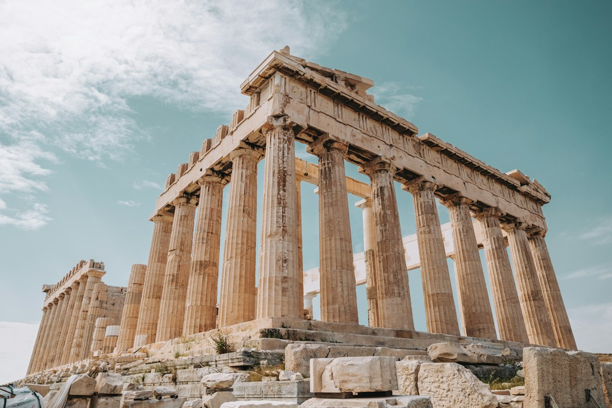
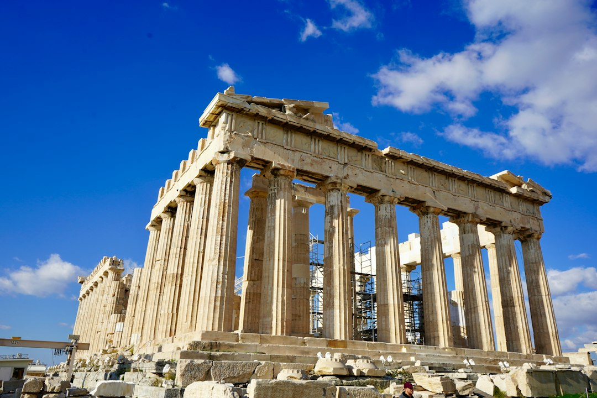
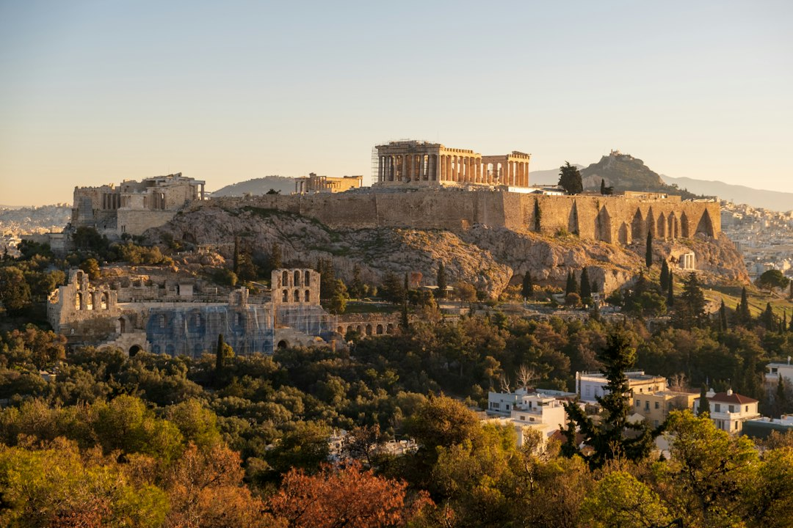
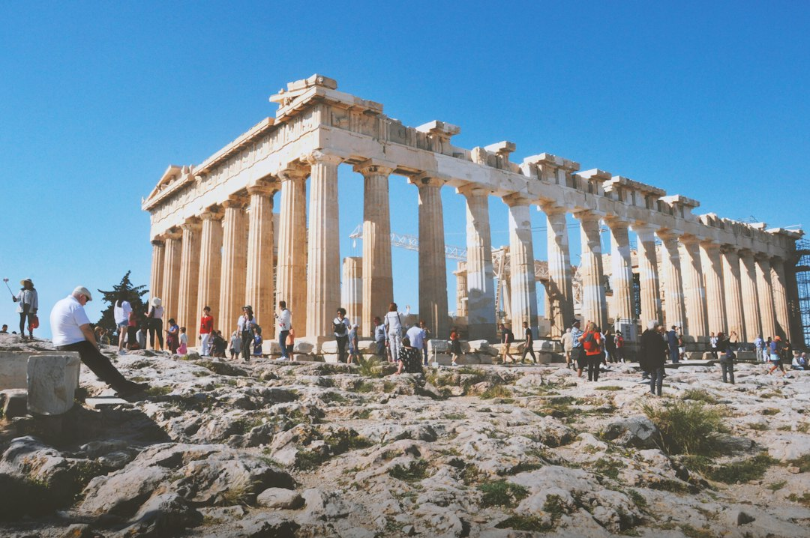
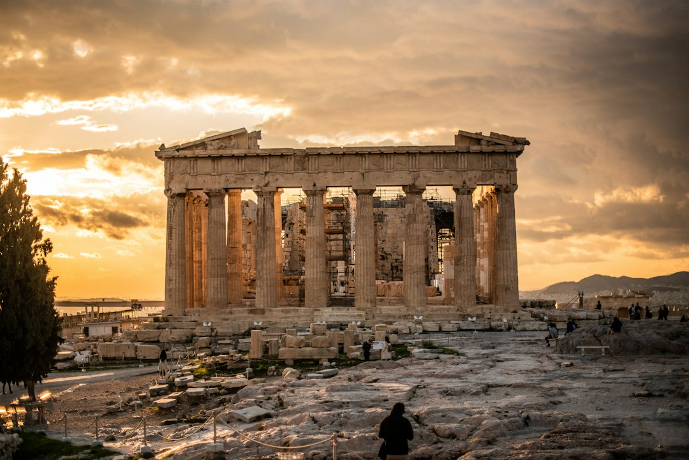
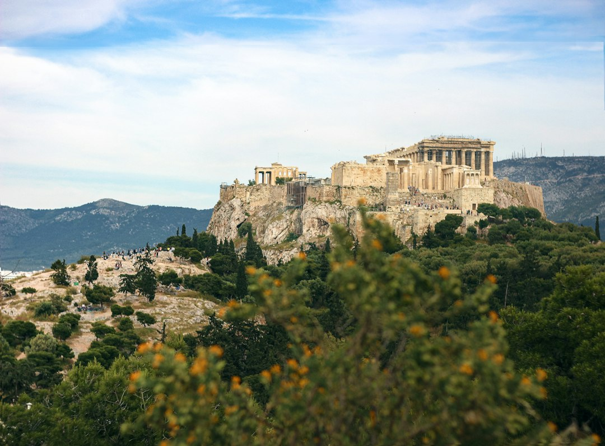
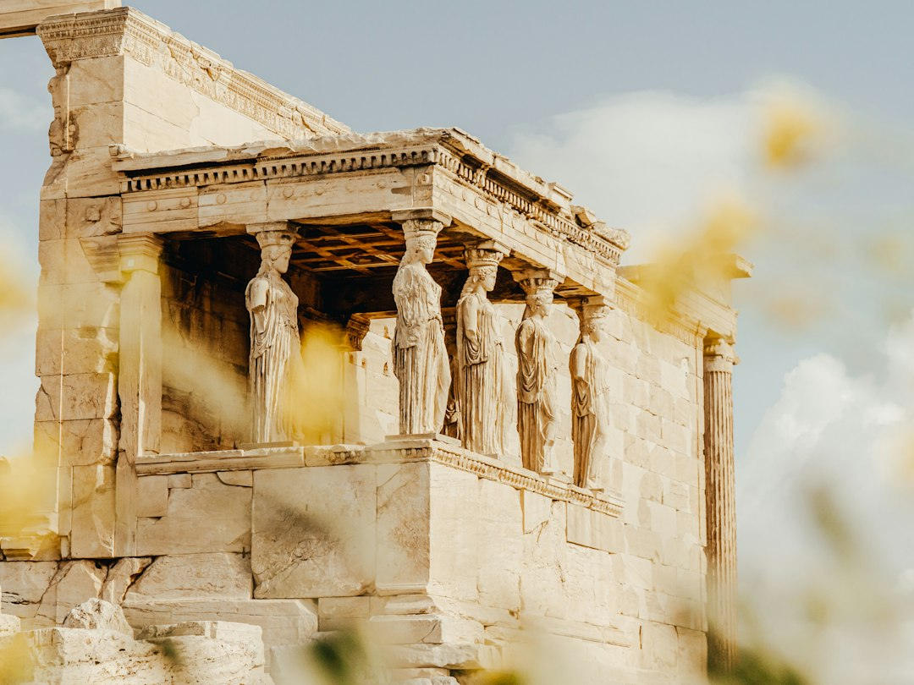

Rising 156 meters above the Attic plain, the Athenian Acropolis is an isolated limestone plateau spanning roughly 170 by 350 meters. Long before it was crowned with fifth-century BCE marble temples, it served as a Bronze Age seat of power. Archaeological excavations confirm that by the thirteenth century BCE (Late Helladic III B), a fortified Mycenaean palace complex occupied the summit. Surrounded by massive Cyclopean stone walls—parts of which were later remembered as the Pelargikon—the rock functioned as a defensive bastion guarding communal water supplies and sheltering the local ruler (anax).

During the eighth century BCE, parallel with the formation of the Athenian city-state (polis), the Acropolis underwent a profound functional transformation. Royal military dominance gave way to civic and religious devotion. The patron deity Athena assumed paramount importance, venerated under distinct aspects: as Athena Polias, protector of civic institutions; Athena Promachos, vanguard warrior; and Athena Ergane, patroness of artisans. By the sixth century BCE, the tyrants and early democratic institutions transformed the precinct into a sanctuary filled with votive statues (korai) and monumental limestone architecture, establishing the site as the spiritual and political fulcrum of Attica.

The turning point for the Classical Acropolis occurred in 480 BCE, when Persian forces under Xerxes I sacked Athens, burning its archaic wooden and stone temples. For more than three decades, the Athenians left the ruins intact as a visible war memorial. However, with the consolidation of the Delian League—a maritime confederation formed to resist Persian resurgence, whose treasury was transferred to Athens in 454 BCE—the statesman Pericles launched an unprecedented building initiative in 447 BCE.

Financed by civic revenues, mining surplus from Laurion, and alliance assessments, the project was designed to project civic preeminence, democratic pride, and spiritual piety. Under the artistic direction of the master sculptor Pheidias, the rocky plateau was leveled and terraced to accommodate an integrated ensemble of buildings. Rather than arranging structures along rigid axial lines, the architects exploited natural topography to stage dynamic, shifting perspectives for processionals ascending the Sacred Way.

Between 447 and 406 BCE, four foundational monuments were completed on the summit, setting standards for Classical architectural theory:
The Parthenon (447–432 BCE): Designed by the architects Iktinos and Kallikrates, this octastyle peripteral temple dedicated to Athena Parthenos synthesized Doric monumentalism with Ionic grace. The structure is famous for its calculated optical refinements: the stylobate (floor) curves gently upward toward the center; the columns tilt subtly inward and feature entasis (a slight mid-shaft swelling); and the corner columns are fractionally thicker to prevent them from appearing diminished against the open sky. Inside stood Pheidias’s colossal chryselephantine (gold-and-ivory) statue of Athena, while the exterior friezes depicted mythic contests alongside an idealized civic procession.

The Propylaia (437–432 BCE): The monumental gateway planned by Mnesikles negotiated the precipitous western slope. Combining exterior Doric facades with interior Ionic colonnades, the Propylaia governed access to the sacred precinct, accommodating processional traffic while incorporating early gallery spaces (the Pinakotheke).
The Temple of Athena Nike (427–424 BCE): Positioned precariously on the southwest bastion flanking the Propylaia, this small, elegant amphiprostyle Ionic temple celebrated military deliverance during the Peloponnesian War, encapsulated in the delicate reliefs of winged victories (nikai) along its protective parapet.
The Erechtheion (421–406 BCE): Constructed on uneven terrain north of the Parthenon, this complex Ionic temple accommodated multiple archaic cults, housing the olive tree sacred to Athena, the salt mark of Poseidon, and the tombs of legendary Attic kings. Its northern porch features the iconic Caryatid Porch, where six sculpted female figures serve as structural load-bearing columns.
Viewed in a world-historical context, the Athenian Acropolis illustrates how ancient agrarian and maritime states harnessed monumental sacred architecture to legitimize political structures. The deliberate spatial elevation of authority is mirrored globally. In the Bronze Age Indus Valley, cities such as Mohenjo-daro and Dholavira maintained elevated "citadels" separated from the lower residential towns, concentrating administrative, ceremonial, and hydraulic installations on raised platforms, though without the personalized religious portraiture seen in the Aegean.

Contemporary with the Periclean building phase, the Achaemenid Persian Empire expressed imperial hegemony on a grand scale at Persepolis (Takht-e Jamshid). There, Darius I and Xerxes built monumental hypostyle audience halls on a raised stone terrace. While Persepolis utilized stone reliefs to illustrate imperial subjects bringing tribute to an absolute monarch, the Acropolis democratized its imagery, presenting Athenian citizens participating in civic-sacred rites alongside their Olympian protectors.
The architectural concepts pioneered on the Acropolis diffused extensively across Eurasia following the campaigns of Alexander the Great. In Hellenized Central and South Asia—within the Greco-Bactrian and Indo-Greek realms of modern Afghanistan, Pakistan, and northwestern India—Classical orders adapted to local environments. At sites such as Taxila (Sirkap) and Ai-Khanoum, and across the syncretic Buddhist traditions of Gandhara, Ionic capitals, acanthus friezes, and Greek geometric proportions were integrated into Buddhist stupas and monastic architecture, demonstrating the deep trans-Eurasian exchange of Classical spatial design.
Over two and a half millennia, the Acropolis survived fires, Roman reconfigurations, conversion into a Byzantine cathedral and an Ottoman administrative quarter, and the catastrophic 1687 Venetian bombardment that ignited a gunpowder store inside the Parthenon. Following the formation of the modern Greek State in 1833, the site was declared an archaeological monument, inaugurating an era of intense, sometimes problematic restoration.

Since 1975, the Committee for the Restoration of the Acropolis Monuments (ESMA) and the Acropolis Restoration Service (YSMA) have carried out systematic conservation informed by the international Venice Charter. Earlier destructive iron dowels, which had rusted and split the marble, were replaced with non-corrosive titanium fixtures. Restorations adhere to the principle of anastylosis—rebuilding using original scattered stones wherever possible—with necessary additions made from matching white Pentelic marble quarried from the original mountain. By ensuring that every intervention remains structurally stable, scientifically documented, and completely reversible, modern conservators preserve the material integrity of this ancient civic citadel for global history.
--- ### 5.